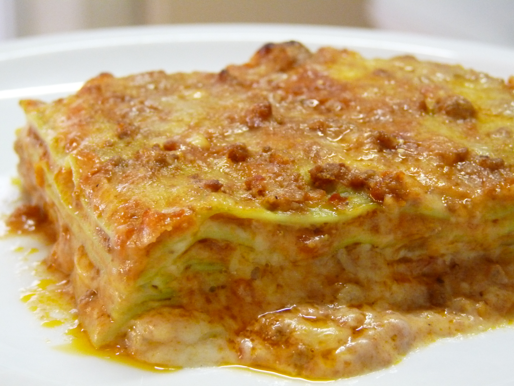

Home
Lasagna Bolognese

Image by
Sambawamba
,licenced under
CC BY-SA 4.0
,via Wikimedia Commons. No modifications made.
Description
Lasagna Bolognese is a traditional Italian dish made with layers of lasagna pasta, rich meat sauce, creamy béchamel sauce, and cheese.
The meat sauce, known as ragù alla Bolognese, is slowly cooked with ground beef, tomatoes, onions, carrots, and celery to develop a deep, savoury flavour.
The layers are assembled in a baking dish and baked until the pasta is tender, the sauces are bubbling, and the cheese on top turns golden brown.
Lasagna Bolognese is a hearty and comforting meal that is perfect for sharing with family and friends.
Ingredients
- Lasagna pasta sheets
- 500 g ground beef
- 1 onion, finely chopped
- 1 carrot, finely chopped
- 1 celery stalk, finely chopped
- 2 cloves garlic, minced
- 400 g canned crushed tomatoes
- 2 tablespoons tomato paste
- 2 tablespoons olive oil
- 1 cup beef stock
- 1 teaspoon dried oregano
- 1 teaspoon dried basil
- Salt, to taste
- Black pepper, to taste
- 3 tablespoons butter
- 3 tablespoons all-purpose flour
- 3 cups milk
- A pinch of ground nutmeg
- 1½ cups grated mozzarella cheese
- ½ cup grated Parmesan cheese
Steps
- Prepare the vegetables: Finely chop the onion, carrot, and celery. Mince the garlic.
- Cook the vegetables: Heat olive oil in a large saucepan over medium heat. Add the onion, carrot, and celery, and cook until softened. Add the garlic and cook for another minute.
- Brown the meat: Add the ground beef and cook until browned, breaking it apart with a spoon as it cooks.
- Prepare the Bolognese sauce: Stir in the tomato paste, crushed tomatoes, beef stock, oregano, basil, salt, and black pepper.Reduce the heat and simmer for 30–45 minutes, stirring occasionally,
until the sauce thickens.
- Make the béchamel sauce: Melt the butter in a saucepan over medium heat. Stir in the flour and cook for about one minute. Gradually whisk in the milk until smooth. Continue stirring until the sauce thickens,
then season with salt, pepper, and a pinch of nutmeg.
- Prepare the oven: Preheat the oven to 180°C (350°F).
- Assemble the lasagna: Spread a thin layer of Bolognese sauce in a baking dish. Add a layer of lasagna sheets, followed by Bolognese sauce, béchamel sauce, and a sprinkling of cheese.
Repeat the layers until the ingredients are used, finishing with béchamel sauce and the remaining mozzarella and Parmesan.
- Bake the lasagna: Cover the dish loosely with foil and bake for approximately 25 minutes. Remove the foil and bake for another 15–20 minutes, until the top is golden and bubbling. Follow the pasta package instructions
if they require a different cooking time.
- Let it rest: Remove the lasagna from the oven and allow it to rest for 10–15 minutes so the layers can settle.
- Serve: Cut the lasagna into portions and serve warm. Enjoy your homemade Lasagna Bolognese!